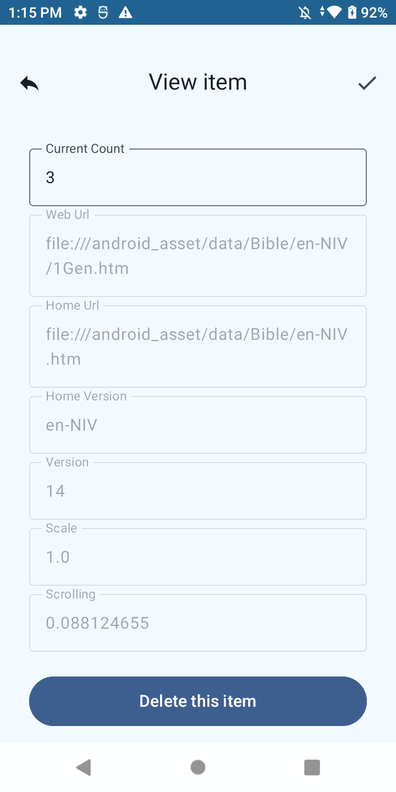

|
|---|
Help Portal
Bible Dailylight is for you to read your Bible versions, regardless of online/offline. Compared to other Bible software, it supports Multi-Books, Multi-Versions, Search-by-Book, Multi-Languages, and Multi-Devices.
1) Multi-Books. You are able to open multiple books at the same time. In case you are reading one of the Gospel book, you may want to cross-check how other Gospel books describe the same event. With Dailylight, you will not lose your spot on the Gospel book you start with.
2) Multi-Versions. You are able to open multiple versions at the same time. In case you are reading one book in Chinese, you may want to cross-check how other versions translate the same word. With Dailylight, you will not lose your spot on the book you start with.
3) Search-by-Book. Dailylight presents Bible by Book instead of Chapter. It gives readers a sense of complete Book, and helps readers to do keyword search easily.
4) Multi-Languages. Multiple language user interface, English and Chinese for now. In addition, Bible versions of English(NIV) and Chinese(CUV, CUVS) are embedded. Other language versions might be supported in the future.
5) Multi-Devices. You are able to continue read your Bible version from a different device. In case you are reading Bible in online mode, you may continue to read from a different device. With Dailylight, you will not lose your spot on the book you start with.
The latest software releases is version(1.0). Windows version will be planned in the near future.
2. Where to download and how to install?
Dailylight currently supports Android version only. It can be downloaded and installed through Google Play or Samsung Galaxy Store with package name:
com.tiantucorp.bibledailylight
1) Bible Versions Available listed:

2) Choose the right Bible-Book-Chapter
3) Search by Book
from Icon Arrow dropdown menu.
from Icon Setting dropdown menu.
Currently, English and Chinese (Simple and Traditional) are fully supported.
from Icon Home dropdown menu.
from Icon Forward in the left corner to set Online Mode,
from Icon Reply in the left corner to return to Reading.
1) Connected
2) Online Decision
3) View Online Content
4) View Item

5) Return to Reading Online